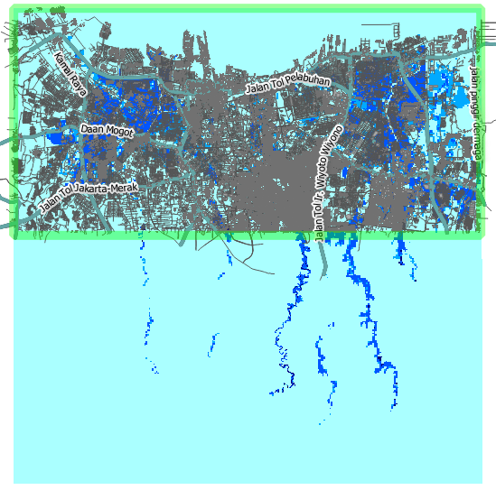
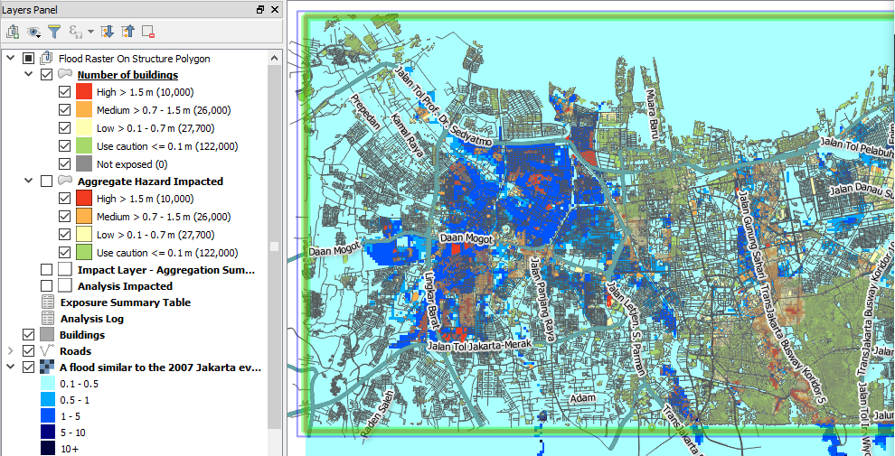
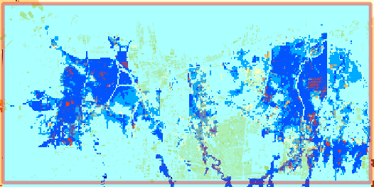
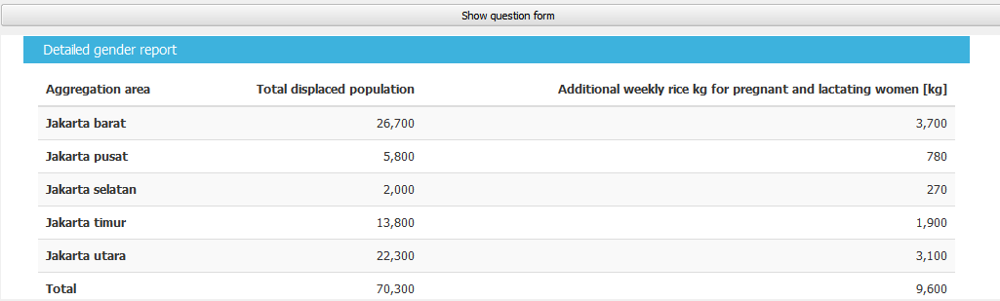

Chapter 8: Using InaSAFE¶
Learning Objectives
Understand Hazard, Exposure and Impact
Learn InaSAFE interface
Run InaSAFE for Infrastructure
Use InaSAFE OpenStreetMap downloader
Add keyword metadata
Set outline impact analysis
Run InaSAFE for Population
Use aggregation layer
Customize minimum needs
Print InaSAFE Result
Save Impact Result data into new layer
InaSAFE provides overviews of potential disaster scenarios, of their outcomes, as well as map which can aid decision makers when disaster strikes. In this chapter we will learn about how to use InaSAFE along with other usefull features in InaSAFE for flood hazard scenario. If you interest to learn more about InaSAFE with other hazard beside flood, you go and learn in InaSAFE website.
8.1 Hazards, Exposure and Impact¶
Let’s begin by reviewing the inputs and outputs of InaSAFE – hazard; exposure; and impact. These terms are important for you to remember because the analysis process depend on these three things.
Hazards (also called disasters) are what we call the data layers that describe the extent and magnitude of natural events (such as earthquakes, tsunamis, volcanic eruptions) that could potentially cause an event or series of events that threaten and disrupt the lives and livelihoods of people.
In general, the hazards data we use in InaSAFE represents a single hazard scenario. A scenario means that the hazard:
is at a particular location
has a measured intensity
has a measured duration
has a certain time frame
Exposure data represents things that are at risk when faced with a potential hazard. This can be man-made features such as public buildings, houses, roads and bridges, or it can be so-called natural features, such as population, rice paddies and lakes. These exposed elements can be divided into various categories, including physical elements (houses, power lines), economic elements (agricultural land, access to employment), social elements (vulnerable groups, population count), and environmental elements (air, water, plants and animals).
Impact is the result we get after InaSAFE processes the effect of the hazard data upon the exposure data. For example, if there is an earthquake model in Lembang, and we process it against building data in Bandung, our impact layer may show those houses that would be severely damaged, those somewhat damaged, and those mildly damaged. In other words, what goes in to InaSAFE are hazards and exposure. What comes out is impact.
8.2 The InaSAFE Interface¶
Before we run any scenarios, let’s take a closer look at the InaSAFE interface.
First, make sure you’ve installed the InaSAFE plugins. Follow the plugin instructions in chapter 3. Find and install the plugin called InaSAFE.
Open a new project in QGIS.
If the InaSAFE toolbar is not visible, right-click on the toolbars and make sure that InaSAFE plugin is checked. The toolbar looks like this:
To show the InaSAFE panel, click on the Toggle InaSAFE dock button.
Note
Just like QGIS toolbars, you can drag and drop the InaSAFE dock panel to change its position on the QGIS interface. You can pull it away as a separate window, or place it below the Layers panel. It’s convenient in its location on the right side of QGIS, so we will leave it there.
The InaSAFE panel consists of three parts: Questions, Results and Buttons. The questions are mixed in with dropdown boxes - this is where we establish our input data and define the scenario that we want InaSAFE to process. The purpose of InaSAFE is to make your impact analysis very simple and easy to do. The Questions section provides a simple way for you to formulate what you want to know. All questions are created in the following format:
In the event of [hazard] how many [exposure] will be affected?
For example: “In the event of an earthquake how many buildings will be affected?”
The Results section is filled in with information after InaSAFE is run, as we shall see. The buttons at the bottom allow us to run a scenario, print and access help.
8.3 Run InaSAFE for Infrastructure¶
8.3.1 Adding Hazard Data¶
We will learn about how to use InaSAFE to run impact scenario based on Infrastructure data. Before we start, let’s find out how to add hazard data first. Hazards can be represented by vector layers or by raster layers. Remember that raster layers are like images with many pixels, and each pixel represents some data about an area on the ground. A raster that shows elevation, for example, will contain pixels with different values based on the altitude of the location. Similarly, a raster that represents a flood will contain the depth of the flood in every pixel in the raster.
Let’s begin by adding our hazard layer to QGIS. It’s a raster model of flood in Jakarta.
Click the Add Raster Layer button.

Open
Jakarta_Flood_HKV_WGS84.tif. This data is raster data (in .tif format) which represents the flood prone area. The layer will look like this:
You will notice that the hazard drop-down box has been automatically filled in the InaSAFE panel. This is because the data file has already been prepared for us with keyword metadata (fancy words for settings) that tells InaSAFE whether it’s a hazard or exposure layer. When we add the exposure data, we will learn how to add these InaSAFE keywords ourselves.
8.3.2 Adding Exposure Data¶
We can get the data from OpenStreetMap using OpenStreetMap Downloader. We will get any OpenStreetMap data based on the current map extent in QGIS. If your map extent displaying Indonesia, that will take a while to download it since there will be a whole lot of OpenStreetMap data. It would be better to zoom in in specific location to minimize the bandwidth. Let’s learn how to use OpenStreetMap Downloader in QGIS to get OpenStreetMap data.
Click on OpenStreetMap Downloader button.
In the Feature Types you can choose all the OpenStreetMap data or specific data that you want download such as building polygons and Roads. Also you can download political boundaries and select level administration in your area such as RW Jakarta is level 8.
Set you output directory to the destination you want by clicking “…” button on the right side.
If you want to use some prefix, for example jakarta you can type in File name prefix area.
We can download all the map canvas extent but it would take a long time. Otherwise if you want to download specific area, click on Drag on Map button and create a bounding box by dragging it to set download area.
Click on OK and wait until the download is finished.
You can hide the Roads by clicking the box next to Roads layer list.
8.3.3 Adding Keyword Metadata¶
In order for InaSAFE to know that our layers are hazard or exposure datasets, we need to assign keywords to the layers using the InaSAFE keyword tool. Let’s take a look at the keywords that have already been created on the hazard layer.
Select the buildings layer in the Layers panel, and click on the Keywords Creation Wizard button.
In the InaSAFE Keywords Creation Wizard window, firstly, choose Exposure since building is one of the exposure affected by hazard. Then, click Next.
In the next step, we have to choose what kind of exposure the building layer represents. Choose Structures and then click Next.
Choose what kind of data the building layer represents. Since the building layer data has been classified, choose Classified and then click Next.
In the next step, we have to select the attribute in the building layer that represents the classes. Then click Next.
Select the type of classification we want to use and then click Next.
Drag unique values from the list on the left into the panel on the right and place them in the appropriate categories and then click Next.
The next step is optional. We can write a short comment about the source of the data. Then click Next.
Give title to the building layer and then click Next.
Click Finish.
Select the Roads layer. Open the keyword editor and do the steps above all over again.
Notice that the layer now appears in the InaSAFE panel.
8.3.4 Set Outline Impact Analysis¶
If you have a laptop with small RAM, run InaSAFE for large area with so many data will take a long time to finish. To solve the problem, we can set the analysis area to a smaller area to make the analysis quicker.
Select Toggle Scenario Outlines to show analysis outline area.
Green box will appear around the map canvas.
This green box is the analysis area. InaSAFE will calculate all the data inside the green box.
To change the analysis area, click Set analysis area button.
Click Use intersections of hazard, exposure and this bounding box and click on Drag on map button and create a box to set analysis area. This will create blue box around map canvas.
After that click OK.
8.3.5 Impact Analysis¶
Now our hazard and exposure data are set in the InaSAFE panel, because the appropriate keywords have been added to our layers. Note that if we were to add a second exposure layer to our project, we would be able to choose which exposure layer we wanted from the InaSAFE drop-down menu. The same applies to hazard layers.
The third drop-down box is the impact function. This concludes our question, and defines the function that InaSAFE will run behind the scenes. InaSAFE developers have written many of these functions to analyse all sorts of hazard and exposure layers. The function that is selected for us here will process the hazard and exposure layers spatially to determine how the exposure layer will “be flooded.”
Click the Run button at the bottom to start the impact analysis. At the end of the process, the statistics will be displayed in the Results section, and a new layer will be added to the Layers panel that describes the result of the analysis. The map will show which buildings that are affected and which are not.
8.4 Run InaSAFE for Population¶
In this section we will learn how to run impact analysis for population data with InaSAFE. We are going to use the same raster hazard data for flood in Jakarta and we will add another exposure data: population from AsiaPop.
8.4.1 Adding Exposure Data¶
We have already learned about how to change the symbol for this data in previous chapter (chapter 6), so if the appearance of this AsiaPop’s data is different than yours, you may need to change it.
Click Add Raster Layer button and add
Java_Population_WGS84.tif.Change the layer order like this:
You can hide the vector data such as roads and buildings to create clearer view in map canvas.
8.4.2 Adding Keyword Data for Population¶
Select the Java_Population_WGS84 layer in the Layers panel, and click on the Keywords Creation Wizard button.
In the Keywords Creation Wizard window choose Exposure as category layer, then click Next.
In the next step, we have to choose what kind of exposure the population layer represents. Choose Population and then click Next.
Choose what kind of data the building layer represents. Choose Continuous and then click Next.
We have to choose what units the continuous data are in. Then, click Next.
In the next step, we can select the checkbox if we want InaSAFE to resample the layer to the hazard layer resolution during analyses. Then, click Next.
The next step is optional. We can write a short comment about the source of the data. Then click Next.
We can fill the Title with People and then click Next.
Click Finish.
Notice that the layer now appears in the InaSAFE panel.
8.4.3 Using boundary as aggregation layer¶
We can use InaSAFE to give impact result according to the whole area or divide it by administrative boundary. InaSAFE will provide impact analyst result for each administration area that we provide. This method will help us to know the result specifically for each area, so we are able to know how many people that might be affected and how many logistic we should prepare for each administration area. To do this, we need to define aggregation layer first using Keyword Creation Wizard.
Click Add Vector Layer button and add
Jakarta_District_Boundary_WGS84.shp.Select the
Jakarta District.shplayer in the Layers panel, and click on the Keywords Creation Wizard button.In the Keywords Creation Wizard window choose aggregation as category layer.
Select the attribute in the layer that has the name of the aggregation areas. Then click Next.
Choose the field in the layer that represents specified concept of field or/and set default value if there is no value and then click Next.
The next step is optional. We can write a short comment about the source of the data. Then click Next.
We can fill the Title with District Jakarta and then click Next.
Click Finish.
8.4.4 Set Outline Analysis¶
We have already set the analysis area for imapct calculation for the building. This time we will set the analysis area for population data.
Right click on A flood similar to the 2007 Jakarta event layer and click Zoom to Layer
Select Toggle Scenario Outlines to show the analysis outline area.
Green box will appear around the map canvas.
This green box is the analysis area. InaSAFE will calculate all the data inside the green box.
To change the analysis area, click Set analysis area button.
Click Drag on map button and create a box to set around the A flood similar to the 2007 Jakarta event area. This will create a blue box around map canvas.
After that click OK.
We will run InaSAFE with Jakarta boundary as aggregation layer. To do this, simply change Summarise the result by in the InaSAFE panel into district boundary.
Now click, Run to calculate impact analysis and wait for a moment.
You will get impact result in the InaSAFE panel in the right side divided by 5 municipal in Jakarta.
8.4.5 Configure Minimum Needs¶
When you scroll impact result from running InaSAFE scenario, you will notice that there are some statistic that show how many rice, drinking water, clean water, family kits and toilet for each municipals in Jakarta. It’s called minimum needs per week for each people evacuated. The purpose of this minimum needs is to provide quick method calculating support requirements (in terms of food, water, etc) for displaced persons.
The minimum needs (by default) are based on ‘Perka 7/2008’ BNPB according to the following default formulas:
400g rice per person per day (2.8 kg per week)
2.5l drinking water per person per day (17.51 L per week)
15l clean water per person per day (105 L per week)
One family kits per family per week (assumes five people per families which is not specified in perka)
20 people per toilet
If you are not satisfied with these configuration, you can define your custom minimum needs for your own area using Minimum Needs Configuration
Click in
Minimum Needs Manager Window will appear. You can see in the Profile selection there are 4 profile defined, BNPB_en, Philippine Minimum Needs_en, BNPB_id, SPHERE, and Tanzania.
If you want to change the default minimum needs for each item in each profile, simply select an item that you want to change and click
button in the right upper side of the window.
You will enter Resource editor and from these editor, you can add or modify resource by filling each field that you think is important.
Click Save Resource if you have already changed the value from an item or click Discard Changes if you didn’t change anything.
If you want to create your own custom minimum needs, click New in the bottom side of the window and you can start adding new item by clicking the + button in the right upper side of the window to open Resource editor.
Click Save after adding several items to your custom minimum needs.
8.4.6 Run Impact Analyst with Modified Minimum Needs¶
After creating your custom minimum needs you can run InaSAFE with your own minimum needs:
Go to
In Minimum Needs Manager Window, select your custom profile in Profile selector. After that, close the Minimum Needs Manager Window.
Click Run to see the InaSAFE result with your custom minimum needs.
8.5 Print InaSAFE Result¶
The data displayed on the screen can be saved to a PDF file by clicking Print at the bottom of the InaSAFE panel.
Click on the InaSAFE result layer and click Print.
The analysis results will automatically open in pdf format. If you want to print it, click File – Print or if you want to save it click File – Save As.
8.6 Save Your Results¶
You can save the impact layer that InaSAFE created, and you can save the QGIS project to come back to it later, but note that the InaSAFE’s symbology style cannot be saved. It will show you only black and white layer and you need to symbolise again.
8.6.1 Save your InaSAFE result style¶
To get the style from your InaSAFE result, you need to save the InaSAFE result’s style first.
Right click on Number of People, and go to Properties.
Go to Style button on the bottom side the properties window, click Save Style and choose QGIS Layer Style File ….
Save your symbology style as population_result_style and click Save button.
To save the newly generated layer, right-click on it in the Layers panel. Click Save As …
8.6.2 Save InaSAFE Result layer¶
After you saved your InaSAFE result style now you can save your InaSAFE result layer and get the same style like the InaSAFE Result.
Right click on Number of People, and go to Save As…
Click on Browse button and select a name and location for the file. Click OK.
Load your saved layer using Add Raster Layer button.
You will see black and white layer in map extent. Open the properties of your saved layer to resolve this.
Go to Style button on the bottom side the properties window and click Load Style…
Select your
population_result_styleand click Open button.Now your saved layer will have the same style with your temporary InaSAFE result layer.
To use this style as default style you can click Save as Default under Style button.
8.6.3 Save Project¶
Click Save As button in toolbar.
Give a name to the project and put it in the directory where you want to save your work. Then click Save.
Now you have learned about how to use InaSAFE from using InaSAFE Keyword Wizard to define keyword attribute, how to run InaSAFE with InaSAFE dock and Impact Function Wizard, how to modify minimum needs, and how to use OSM Downloader to download OpenStreetMap data directly. InaSAFE is really helpful for us to know the impact of disaster and how we can create some plans if the disaster were to happen in real life.